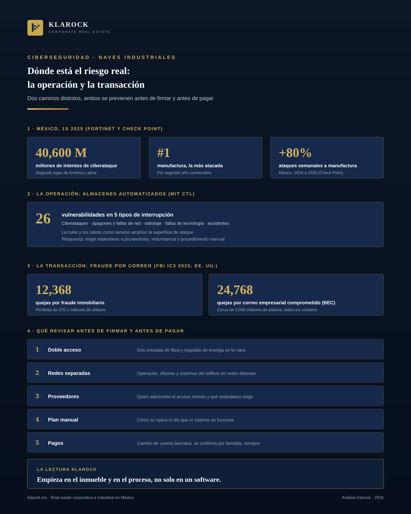

Industrial · 2026-10-23
Ciberseguridad en naves industriales y operaciones inmobiliarias: dónde está el riesgo real
Una nave industrial moderna ya no es solo un edificio: tiene robots, sistemas de almacén, cámaras, control de accesos y redes que se conectan con proveedores. Cada una de esas conexiones es una puerta.

Resumen ejecutivo
Una nave industrial moderna ya no es solo un edificio: tiene robots, sistemas de almacén, cámaras, control de accesos y redes que se conectan con proveedores. Cada una de esas conexiones es una puerta. Al mismo tiempo, México es uno de los países más atacados de la región y la manufactura es el sector con más intentos de ataque.
El riesgo para una empresa inmobiliaria o industrial viene por dos caminos distintos: la operación (sistemas que se detienen o se secuestran) y la transacción (correos falsos que desvían un pago). Los dos se previenen con decisiones sencillas, tomadas antes de firmar y antes de pagar.
Este artículo resume qué dicen los datos más recientes, qué vulnerabilidades identifica la investigación sobre almacenes automatizados y qué revisar según cada perfil: inquilino, propietario e inversionista.
1. El contexto: México y el sector industrial
Según Fortinet, México registró 40,600 millones de intentos de ciberataque en el primer semestre de 2025, el segundo lugar de América Latina. La manufactura fue, por segundo año consecutivo, la industria más atacada. Fortinet advierte además que los entornos de tecnología operativa (OT, los sistemas que controlan máquinas y procesos) ya no son un daño colateral, sino que empiezan a ser objetivos principales.
Un análisis de Check Point sobre manufactura, citado por México Industry en abril de 2026, estima que los ataques semanales a ese sector en México aumentaron 80% entre 2024 y 2025, el sexto mayor aumento del mundo.
Estas cifras miden intentos y tendencias, no daños confirmados. Lo que sí muestran es que quien opera en una nave industrial está en el sector que más atención recibe de los atacantes.
2. Qué se puede romper dentro de un almacén automatizado
El Centro de Transporte y Logística del MIT (Rodríguez García, Betts y Ponce, febrero de 2025) estudió los almacenes altamente automatizados y agrupó sus riesgos en cinco tipos de interrupción: ciberataques, apagones o fallas de red y energía, sabotaje, fallas de tecnología y accidentes. En total identificó 26 vulnerabilidades. Entre sus conclusiones:
- —Los sistemas en la nube y los robots contratados como servicio (Robotics-as-a-Service) amplían la superficie de ataque.
- —Los sistemas heredados limitan qué protecciones se pueden aplicar.
- —Las recomendaciones centrales son exigir estándares de seguridad a los proveedores, capacitar al personal, construir redundancia en los sistemas críticos y mantener procedimientos manuales para seguir operando si la tecnología falla.
La conexión con el edificio es directa. Redundancia significa más de un acceso de red y de energía; seguir operando significa también espacio y procesos para trabajar sin automatización. Lo vimos en nuestro análisis sobre qué le pide la IA a una nave industrial: conectividad, energía y respaldo se deciden desde la especificación del inmueble.
3. El otro riesgo: el fraude en la transacción
El segundo camino no toca ninguna máquina. Es el correo que parece venir de la contraparte y pide cambiar la cuenta de pago de una renta, un anticipo o una compraventa.
La referencia más completa viene de Estados Unidos. El informe 2025 del Centro de Quejas de Delitos en Internet del FBI (IC3) registró 12,368 quejas por fraude inmobiliario, con pérdidas de 275.1 millones de dólares. Aparte, el fraude por correo empresarial comprometido (BEC) sumó 24,768 quejas y cerca de 3,040 millones de dólares. Esta segunda cifra incluye todos los sectores, no solo el inmobiliario.
México no publica una estadística equivalente por sector, así que estos datos sirven como orden de magnitud, no como cifra local. La mecánica, sin embargo, no depende del país: un correo creíble, urgencia y un cambio de datos bancarios.
4. Qué revisar según tu perfil
- —Inquilino. Antes de firmar, pregunta qué redes y accesos remotos usarán tus proveedores de automatización y quién los administra. Verifica que la nave ofrezca doble acceso de fibra, respaldo de energía y espacio para separar la red de operación de la red de oficinas. Define un procedimiento manual para el día en que el sistema no funcione.
- —Propietario o desarrollador. Documenta en la ficha la conectividad (entradas de fibra, cuartos de telecomunicaciones) y la energía disponible. Separa las redes de los sistemas del edificio (cámaras, control de accesos, climatización) de las de los inquilinos y limita el acceso remoto de contratistas.
- —Inversionista. Pregunta si el activo permite a un inquilino exigente cumplir sus propios requisitos de seguridad y redundancia. Un inmueble sin esas condiciones es más difícil de reposicionar.
- —Cualquiera que pague o cobre una operación. Confirma por llamada, a un número que ya tenías, cualquier cambio de datos bancarios. Protege el correo del dominio de tu empresa con autenticación en dos pasos y con los registros SPF, DKIM y DMARC, que dificultan que alguien envíe correos haciéndose pasar por ti.
5. Perspectiva Klarock
La ciberseguridad de una operación industrial no se resuelve con un software: empieza en el inmueble y en el proceso. Por eso, al comparar naves, recomendamos revisar la conectividad y la energía como parte de las especificaciones, y al cerrar una operación, verificar siempre los datos de pago por un segundo canal.
Si su empresa evalúa una nave para operar con automatización o va a cerrar una operación inmobiliaria, el equipo de Klarock puede acompañarle en el análisis. Puede ver el inventario por ciudad en naves industriales en México.
Para una conversación sobre selección de sitio y especificaciones de naves, contáctenos al 668 189 4960.
Fuentes consultadas
- —Mexico Business News, "Mexico Records 40.6 Billion Cyberattacks Attempts in 1H25", con datos de Fortinet FortiGuard Labs (19 de agosto de 2025): mexicobusiness.news
- —México Industry, "México y el reto de la ciberseguridad industrial: ataques suben 80%", con datos del Manufacturing Threat Landscape 2025 de Check Point (17 de abril de 2026): mexicoindustry.com
- —MIT Center for Transportation and Logistics, "Identifying the Key Vulnerabilities in the Warehouses of the Future" (28 de febrero de 2025): ctl.mit.edu
- —HousingWire, "FBI cybercrime losses: real estate fraud hits $275M", sobre el informe 2025 del FBI IC3 (10 de abril de 2026): housingwire.com
¿Te interesa esta oportunidad?
Escríbenos y un socio director te contactará en menos de 24 horas hábiles.
Contactar a un Socio Director